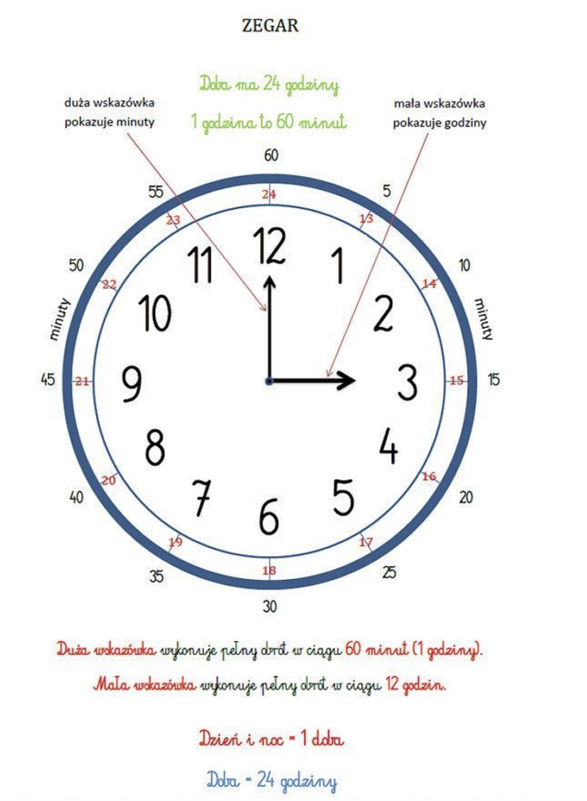

Matematyka > Zegar i kalendarz > Obliczenia zegarowe
Zegar i kalendarz
Obliczenia zegarowe
(Вычисления со временем)
📌 Что это значит?
На уроке ты учишься понимать, как считать время — во сколько началось и закончилось какое-то событие, сколько времени оно длилось, и какое время будет через час, полчаса или четверть часа.
🕰️ 1. Строение часов (Budowa zegara)
⏰ Часы делятся на:
- 12 godzin (часов) — от 1 до 12 (по кругу),
- 60 minut (минут) — одна минута = одна маленькая рисочка.
- 👉 1 час = 60 минут
- 👉 Половина часа = 30 минут
- 👉 Четверть часа = 15 минут


🧮 3. Obliczenia zegarowe (Вычисления с часами)
🔸 Пример 1:
Zajęcia zaczęły się o 9:00 i trwały 2 godziny.
Во сколько się skończyły?
9:00 + 2 godziny = 11:00
🔸 Пример 2:
Film zaczął się o 16:30 i skończył o 18:00.
Ile trwał film?
Od 16:30 do 18:00 = 1 godzina 30 minut
🔸 Пример 3:
Teraz jest 7:15.
Która godzina będzie za 45 minut?
7:15 + 45 minut = 8:00